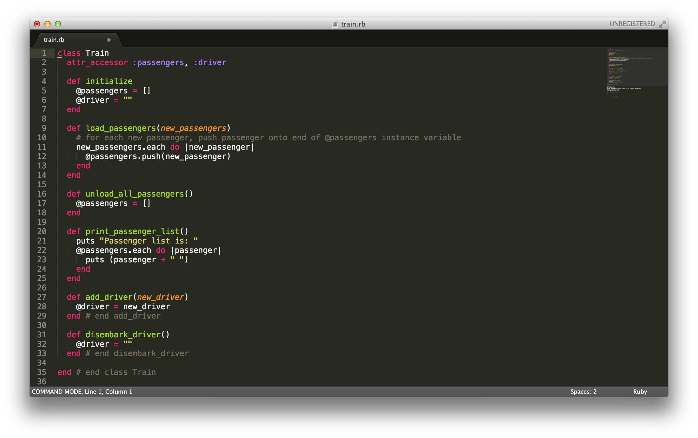
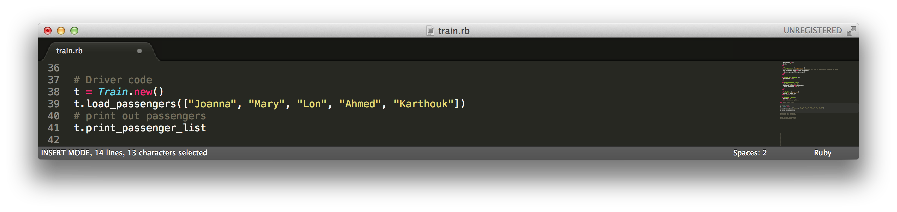
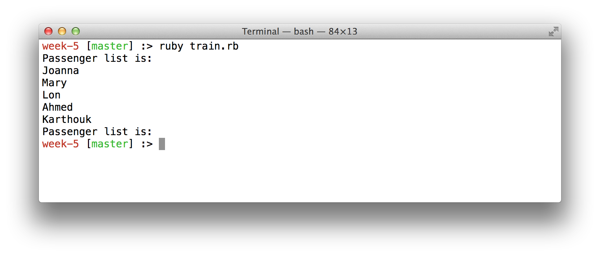
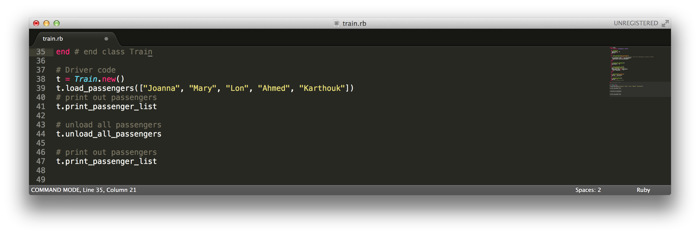
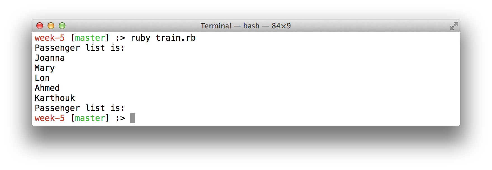

September
4
2014
Today, let's look at a simple Ruby class. The following code snippet shows a simple class named Train, saved in a file named train.rb. This class describes the blueprint for the train class, which can have passengers and a driver. The initialize method sets the passenger list to an empty array, and the driver to an empty string. We can also call load_passengers (with an array of new passengers to load) and add passengers to our train. Unload_all_passengers resets our passenger list to an empty array, such as when we reach the terminal and all passengers disembark. Print_passenger_list allows us to see who is on the train in our passenger list whenever we want. In addition, we have methods to add and disembark a driver.
Now let's look at some test code to create a train and try to load some passengers. If we add the following test code to the bottom of our train.rb file:
This test driver code creates a train object named t, then calls the method load_passengers of the t object with the passengers Joanna, Mary, Lon, Ahmed and Karthouk. Next, the passenger list for train t is printed out. If we run this code, by typing "ruby train.rb" at our terminal, we see:
We can also unload train t by calling the method unload_all_passengers and check our passenger list to see they have all disembarked:
The above code produces the following output:
Showing our train t loading our 5 passengers, printing out the passenger list, then unloading all the passengers. The "Passenger list is: " line at the end is printing nothing showing that we do not have any passengers on our t train. So there you have it! A simple class to create a train. This could be expanded to actually run the train, to have a route, to enter a station, etc.